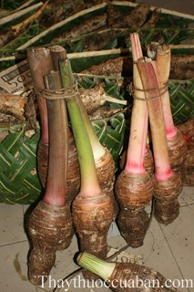

Tên khác
Tên thường gọi: Khoai nước, Môn nước, khoai môn, khoai sọ, môn ngọt
Tên khác: Arum esculentum L.; Colocasia antiquorum Schott; C. antiquorum Schott var. esculenta (L.) Schott;
Tên khoa học: Colocasia esculenta (L.) Schott.
Họ khoa học: Thuộc họ Ráy - Araceae.
Cây khoai nước
(|Mô tả, hình ảnh cây khoai nước, phân bố, thu hái, thành phần hóa học, tác dụng dược lý...)
Mô tả:
Cây khoai nước hay biết đến với cây khoai môn là một cây thuốc quý. Dạng cây thảo mọc hoang và được trồng, có củ ở gốc thân hình khối tròn. Lá có cuống cao đến 0,8m; phiến dạng tim dài 75cm, rộng 65cm, màu lục sẫm nhiều hay ít, tím hay nâu tuỳ giống trồng, gân nổi rõ. Mo vàng có phần ống xanh, đầu nhọn. Trục bông mo mang hoa đực và hoa cái, hoa cái có bầu nhiều noãn. Quả mọng vàng khi chín to 3-4mm.
Bộ phận dùng:
Củ - Rhizoma Colocasiae Esculentae; thường gọi là Vu.
Nơi sống và thu hái:
Loài được trồng nhiều ở nước ta và các xứ nhiệt đới để lấy củ ăn. Người ta còn phân biệt loại Khoai nước mọc hoang, mà người ta xếp vào một thứ của loài này - var. antiquorum (Schott) Habb. et Rehd; ở Trung quốc, người ta gọi là Dã vu. Có tác giả tách ra 2 loài riêng, nhưng cũng có người lại nhập vào một loài. Cũng có người gọi Khoai nước là Colocasia esacuenta Schott, còn Khoai sọ hay Khoai môn là Colocasia antiquorum Schott. Hiện nay, do trồng trọt mà có nhiều thứ khác nhau ở màu sắc của lá, màu sắc của củ. Ta thường nói đến loại môn ngọt là loại Khoai môn có lá màu lục đậm với một đốm đậm nơi gần của cuống. Khoai môn có khả năng thích nghi tương đối rộng trên các loại đất: sét, thịt, cát, pha, cát thô với độ pH cao. Khoai môn có 2 thời kỳ sinh trưởng, 6 tháng đầu phát triển dọc và lá, từ tháng thứ 7 phát triển củ; khi củ già, lá rụng dần.
Thành phần hoá học:
Lá và cuống là nguồn cung cấp provitamin A và vitamin C. Củ chứa tới 30% một chất hột màu trắng, dính, không mùi vị với những hạt bột rất nhỏ; Trong củ có ít nhiều loại hoạt chất chát đắng làm kích thích các màng nhầy nhất là ở ống tiêu hoá, có thể gây ngộ độc; mà có tác giả cho là sapotoxin. Nhưng hoạt chất đó tan trong nước và bay hơi, do đó khi nấu hoặc khi rửa kỹ đều làm mất hoạt chất trong củ. Trong củ còn có các tinh thể oxalat calcium gây cảm giác ngứa, nên khi luộc cần phải thay 2 lần nước thì ăn mới hết ngứa. Dù có luộc chín vẫn giữ lại 37-70% hàm lượng vitamin B1, còn riboflavin hay vitamin B2 và vitamin PP vẫn được giữ lại với một tỷ lệ khá cao.
Tác dụng dược lý
Tác dụng điều hòa chức năng tim và huyết áp, tăng cường miễn dịch, giúp cơ thể con người chống lại các chất gây lão hóa da, tăng cường sức đề kháng cho cơ thể.
Vị thuốc khoai nước - khoai môn

Tính vị
Khoai nước chín vị ngọt nhạt, tính bình.
Công dụng:
Ta thường dùng củ nấu ăn với xôi hay nấu chè, làm bánh
Cuống lá cũng thường dùng làm rau ăn nhưng phải xát hoặc ngâm với muối để khỏi ngứa. Cũng dùng muối dưa ăn.
Củ tươi giã nhỏ dùng đắp trị mụn nhọt có mủ. Dùng ngoài giã nhỏ trộn với dầu dừa xoa đắp diệt ký sinh trùng và trị ghẻ.
Lá giã đắp trị rắn cắn, ong đốt và mụn nhọt.
Liều dùng:
Dùng làm thực phẩm liều không cố định
Dùng đắp ngoài liều không cố định
Ứng dụng lâm sàng của vị thuốc khoai môn
Chữa bệnh viêm khớp, u hạch
Khoai môn kết hợp cá quả tươi, rau ngổ, rau cần nấu thành cám, ăn nóng có thể chữa bệnh viêm khớp, u hạch. Ngoài ra, khoai môn giã nhỏ thành bã đắp lên vết thương bỏng sẽ lên da non, chóng liền sẹo.
Hoạt huyết tiêu viêm
Khoai môn 120g, hành sống 3 củ giã nghiền nát, thêm chút rượu khuấy cho nhuyễn đều, bôi đắp qua gạc mỏng trên chỗ đụng giập chấn thương kín có sưng nề bầm tím.
Chữa tiêu chảy, lỵ
Lá khoai môn 30g, củ cà rốt 30g, tỏi 1 củ. Sắc nước uống.
Chữa mụn nhọt đầu đinh
Củ khoai môn và giấm, liều lượng bằng nhau. Luộc chín sau đó nghiền nát để đắp.
Chữa rắn cắn, ong đốt
Lấy lá tươi giã nát đắp.
Chữa mề đay
Bẹ lá khoai 60g, rễ cây tai chuột 30g, hồng táo 30g, đường đỏ 30g. Sắc uống. Có thể kết hợp nấu bẹ khoai môn tươi với sườn lợn.
Thông hầu họng kháng độc, dùng cho bệnh nhân bị u bướu vùng hầu họng
Khoai môn 6 - 12g, củ khởi (rễ kỷ tử) 50g (có thể thêm thất diệp nhất chi hoa 5g, tân di 12g). Sắc trong 2 giờ, gạn lấy nước trong, uống ngày 1 lần. Dùng liên tục 60 ngày.
Hoặc bài Khoai môn 6 - 12g, củ khởi (rễ kỷ tử) 50g (có thể thêm thất diệp nhất chi hoa 5g, tân di 12g). Sắc trong 2 giờ, gạn lấy nước trong, uống ngày 1 lần. Dùng liên tục 60 ngày.
Tham khảo
Ai nên dùng khoai nước - khoai môn
Tốt cho phụ nữ mang thai: Chất magie có trong khoai nước rất cần thiết cho sức khỏe của xương và chức năng của hệ thần kinh cũng như hệ miễn dịch. Nó giúp huyết áp trong máu bình thường, đồng thời điều tiết lượng đường trong máu. Chất magie trong củ khoai nước cũng giúp bạn giảm được chứng chuột rút ở chân, đặc biệt là đối với phụ nữ mang thai. Một người mỗi ngày cần khoảng 310 mg magie.
Tốt cho người tiểu đường: Theo chuyên gia dinh dưỡng, đối với những người bị bệnh đái tháo đường thường được khuyên là nên chọn các món ăn ít tinh bột và hạn chế tiêu thụ đường, thế nhưng khoai nước lại là sự lựa chọn rất tốt cho họ. Nếu được sự tư vấn sử dụng đúng liều lượng thì người bị bệnh đái tháo đường không bị tăng đường huyết khi ăn khoai nước. Ngoài ra, trong khoai nước còn rất nhiều vitamin A vốn rất tốt trong việc ổn định nồng độ đường trong máu.
Tốt cho người bệnh thận: khoai nước lại có hàm lượng chất béo, đường, đạm rất ít nhưng thành phần calorie cung cấp năng lượng lại khá cao nên sẽ rất tốt cho những người đang trong quá trình điều trị bệnh thận. Khẩu phần ăn của người mắc bệnh thận trung bình một bữa nên ăn từ 200-300g khoai nước.
Tốt cho hệ tiêu hóa: khoai nước rất giàu chất xơ và các hạt tinh bột rất có tác dụng với hệ tiêu hóa. Theo chuyên gia dinh dưỡng, cứ một chén khoai nước luộc 132 g sẽ cung cấp 7 g chất xơ (chiếm 27% lượng chất xơ được đề nghị cho cơ thể hằng ngày). Chất xơ giúp hỗ trợ hệ tiêu hóa và giảm cholesterol. Vì vậy, những người thường xuyên bị táo bón ăn khoai nước thường xuyên sẽ cải thiện rõ rệt.
Khoai môn không chứa chất béo nên tốt cho người ăn kiêng.
Cách chọn và ăn khoai nước đúng cách
- Cần rửa sạch vỏ, vứt bỏ các phần bị hỏng, phải khoét bỏ vùng khoai có mầm vì ở các loại này có nhiều độc tố, ăn sẽ bị ngộ độc.
- Không nên gọt vỏ khoai quá dày sẽ làm mất đi lớp protein rất tốt tồn tại ở sát lớp vỏ của củ.
- Đối với người có da nhạy cảm, khi gọt khoai nên đeo găng để không bị ngứa.
Phân biệt khoai sọ với khoai môn
Cần tránh nhầm lẫn khoai sọ với khoai môn. Khoai sọ có kích thước nhỏ, tròn trịa còn khoai môn củ lớn hơn, hơi dài chứ không tròn. Khi ăn nên chọn những củ có kích thước vừa. Bổ ra, bên trong màu trắng đục, xuất hiện thêm nhiều vân tím thì đó là những củ khoai môn thơm ngon và nhiều bột.
Tag: cay khoai nuoc - khoai mon, vi thuoc khoai nuoc - khoai mon, cong dung khoai nuoc - khoai mon, Hinh anh cay khoai nuoc - khoai mon, Tac dung khoai nuoc - khoai mon, Thuoc nam
Tag: cay Khoai nuoc, vi thuoc Khoai nuoc, cong dung Khoai nuoc, Hinh anh cay Khoai nuoc, Tac dung Khoai nuoc, Thuoc nam
Thaythuoccuaban.com Tổng hợp
*************************